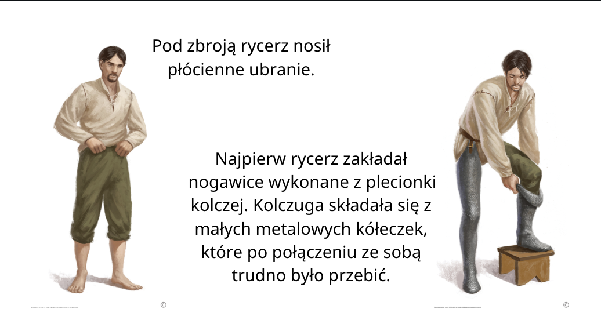
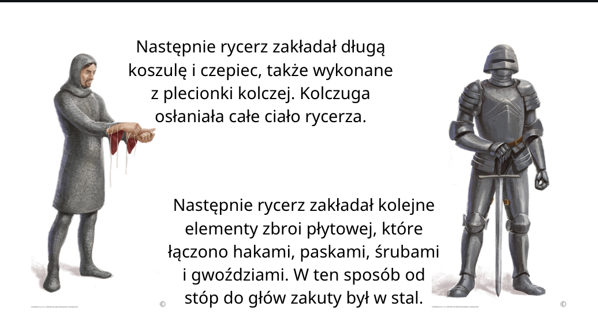

Historia
Rozdział II:Od Piastów do Jagiellonów
Lekcja - Rycerze i zamki
W średniowiecznej Europie najważniejszą część armii stanowili wojownicy zwani rycerzami.
Rycerz był wojownikiem. Często walczył mieczem, stąd czasem nazywa się rycerzy ludźmi miecza. Najważniejszym zadaniem rycerza była walka w dobrej sprawie. Musiał więc bronić swojego króla lub księcia, któremu ślubował wierność. W razie zagrożenia kraju rycerze mieli obowiązek stawić się na rozkaz władcy, by stanąć do walki z wrogiem. Za słuszną sprawę uznawano też walkę chrześcijańskich rycerzy z niewiernymi. Od rycerzy wymagano sprawnego posługiwania się bronią i waleczności, ponieważ od ich umiejętności zależał wynik bitwy.
miecz – miał go każdy średniowieczny rycerz. Broń do walki wręcz o prostym, obosiecznym ostrzu. Służyła do zadawania cięć i pchnięć. Miecz mierzył około 75–85 cm długości, a ważył około 1,3–1,5 kg.
RYCERZ - ciężkozbrojny wojownik, zaczynający bitwę szarżą i używający długiej broni drzewcowej. Jego życiem kierował specjalny kodeks który ukształtował się na przestrzeni lat. Wbrew pozorom nie każdy wojak był rycerzem, piechota to nie rycerstwo. Oprócz walki typowy rycerz zajmował się uprawą własnej ziemi, danej mu przez swego pana feudalnego.
Cechy Rycerza
- religijność
- wiemość
- oddanie Bogu i ojczyźnie
- honor
- sprawiedkiwość
- szlachetność
- szacunek dla kobiet i gotowość do ochrony ich czci
OBOWIĄZKIEM RYCERZA było stawiać się na każde wezwanie swego pana feudalnego w zamian za ziemię (lenno) Rycerz stacjonował w swoim zamku (we wczesnym średniowieczu grodzie) gdzie oprócz niego znajdowała się jego załoga. Jeśli rycerz umarł (a w większości przypadków ginął podczas walki) wszystko co posiadał przechodziło na jego syna. Kiedy natomiast wybuchła wojna rycerz miał obowiązek stawić się z całą swą załogą gotów do wali i śmierci w imię honoru i oddania swemu panu.
Historia 4 [Lekcja 11 - Rycerze i zamki]

Elementy zbroi płytowej
Rycerz nosił na głowie hełm. Twarz chroniła zasłona wyposażona w wizjer, dzięki któremu rycerz widział, co dzieje się na polu bitwy. Niektóre hełmy miały ruchomą zasłonę. Taki hełm nazywany był przyłbicą. Obojczyk osłaniał szyję i podbródek rycerza. Wykonany z ruchomych metalowych płyt fartuch chronił jego brzuch. Bark chronił naramiennik, ramię – opacha, łokieć – nałokcica, przedramię – zarękawie. Dłoń osłaniała pancerna rękawica. Uda rycerza chroniły nabiodrki, łydki i piszczele – nagolenniki. Stopy osłaniały skórzane lub metalowe trzewiki. Nie wszystko można było okryć sztywnymi płytami: dostępu do miejsc pomiędzy nimi strzegła elastyczna kolczuga, czyli plecionka z metalowych kółek.
Ubieranie zbroi
Najpierw rycerz zakładał nogawice wykonane z plecionk kolczej. Kolczuga składała się z małych metalowych kółeczek, które po połaczeniu ze sobą trudno było przebić.
Następnie pycerz zakładał długą koszulę i czepiec, także wykonane z plecionki kolczej. Kolczuga osłaniała całe ciało rycerza.
Następnie rycerz zakładał kolejne elementy zbroi plytowej, które łączono hakami, paskami, śruami i gwoździami. W ten sposób od stóp do głów zakuty był w stal.


Być idealnym rycerzem – kodeks rycerski
W średniowiecznych opowieściach opisywane były cechy idealnego rycerza i zasady, którymi powinien się kierować. Musiał być odważny, hańbą była ucieczka z pola walki. Zwycięstwo nad bezbronnym i słabym przeciwnikiem nie przynosiło chwały. Wymagano od niego uprzejmości wobec kobiet i – w razie potrzeby – opieki nad nimi. Rycerz powinien być dzielny, wierny swemu panu, bronić wiary chrześcijańskiej, dotrzymywać danego słowa.
Jak zostać rycerzem?
Zanim chłopiec został rycerzem, musiał się wiele nauczyć. Chłopiec z rycerskiego domu już w wieku siedmiu lat był przyjmowany na służbę do rycerza jako paź. Uczył się dobrych manier, żeby umieć zachować się przy stole i wobec dam. Pomagał pani domu, opiekował się też końmi, poznawał poezję. Gdy chłopiec ukończył czternaście lat, zostawał giermkiem. Od tego momentu towarzyszył rycerzowi na wojnie, pomagał mu nosić broń i zakładać zbroję, którą czyścił i oliwił. Troszczył się też o konia. Giermek uczył się władać bronią, jeździć konno i czasem sam walczył u boku rycerza.
PAŹ – kiedy syn rycerza osiągnął 7 lat, oddawany był w ręce wychowawców. Uczył się śpiewu, tańca, czytania, pisania, dobrych manier, ćwiczeń sprawnościowych, jazdy konnej i posługiwania się bronią.
GIERMEK – gdy paź osiągał 14 lat awansował na giermka. Opuszczał wtedy dom rodzinny i uczył się u doświadczonych rycerzy. Dbał o konia i oręż pana, towarzyszył mu też w wyprawach wojennych. Jeśli giermek należycie opanował rzemiosło rycerskie w wieku 20 lat po ceremonii pasowania stawał się rycerzem.
Pasowanie na rycerza
Gdy młodzieniec świetnie władał bronią i jeździł konno, a także wykazywał się odwagą i wiernością, mógł zostać pasowany na rycerza. W czasie ceremonii pasowania otrzymywał od swego pana miecz, ostrogi i pas rycerski. Do uroczystości należało też uderzenie mieczem w ramię pasowanego oraz złożenie przez niego przysięgi, że będzie wiernie służył Bogu i swemu władcy.
Siła i zręczność – turniej rycerski
Miejscem, gdzie rycerze mogli popisać się sprawnością we władaniu bronią i doskonalić swoje umiejętności, były turnieje rycerskie. Organizowali je na swych dworach królowie i książęta. W czasie turnieju odbywał się pojedynek na kopie, czyli długie włócznie przeznaczone do walki konnej. Polegał na tym, że przeciwnicy – jadąc na koniach – ruszali na siebie z wyciągniętą bronią. Wygrywał ten, który wytrącił tarczę z ręki rywalowi lub wysadził go z siodła. Czasem rycerze staczali na oczach widzów niezwykle zacięte walki. Zwycięzcy turnieju otrzymywali nagrody, na przykład zbroję i konia przeciwnika.
Koń – najlepszy przyjaciel rycerza
Średniowieczni rycerze ruszali do bitwy konno. Dosiadali specjalnie w tym celu trenowanych rumaków bojowych. W prowadzeniu konia pomagały przymocowane do buta ostrogi.
Gdzie mieszkał rycerz?
Na swojej ziemi rycerze budowali okazałe siedziby czyli zamki, mieszkali w nich razem z rodziną i służbą
Zamki stanowiły wygodne mieszkania dla właścicieli i ich rodzin. Ich posiadacze na ogół byli zamożni i sprawowali ważne urzędy w państwie. Chcieli, by okazałe budowle odzwierciedlały ich bogactwo i pozycję. W zamkach mieszkała też liczna służba. Z okazji różnych świąt i uroczystości wydawano uczty, na które zapraszano znajomych. Mieszkańcy zamku z niecierpliwością oczekiwali przybycia wędrownych śpiewaków. Śpiewane przez nich pieśni często odnosiły się do aktualnych wydarzeń. Dzięki nim nowiny docierały do najbardziej odległych zakątków kraju. Muzykowano też, umilając sobie czas i przygrywając do tańca. Stoły zazwyczaj ustawiano w podkowę, by wszyscy mogli widzieć się nawzajem i podziwiać występy artystów: akrobatów, śpiewaków, żonglerów.